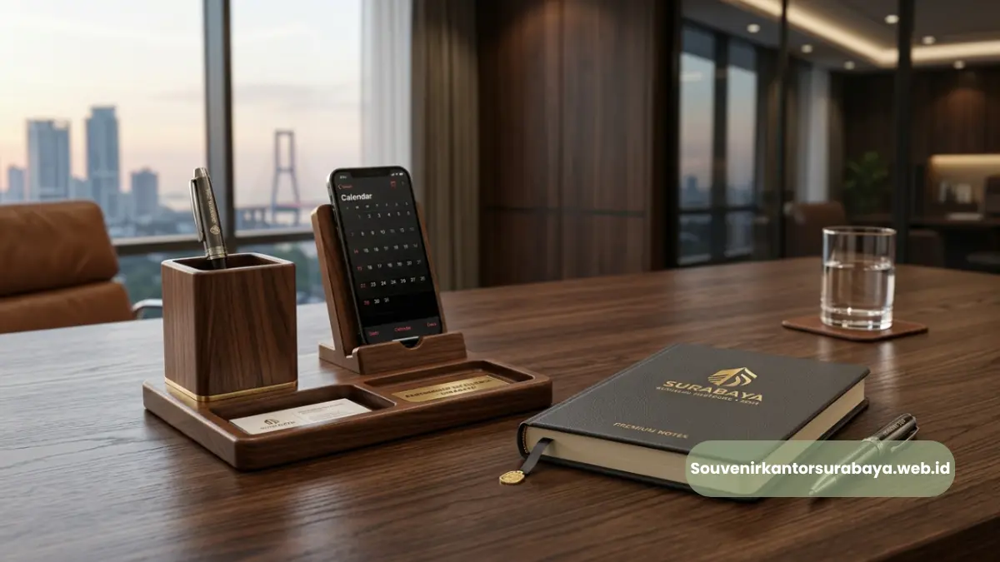
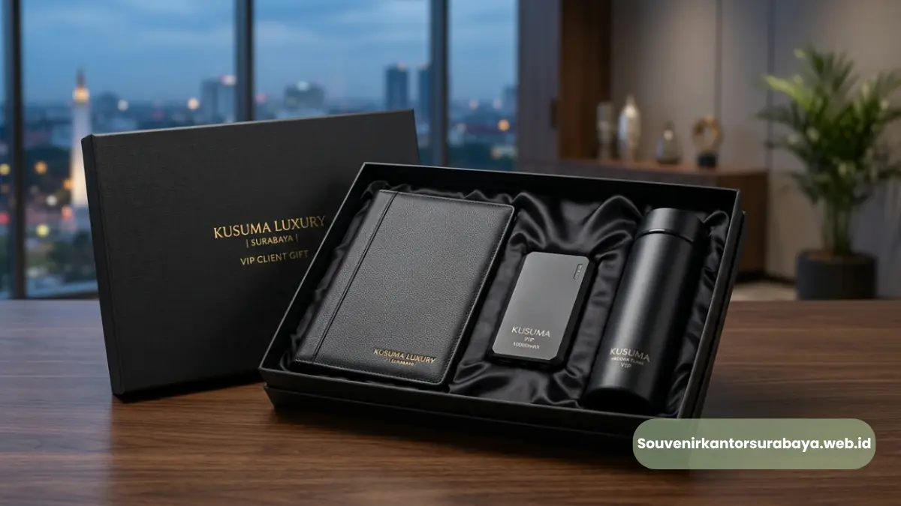
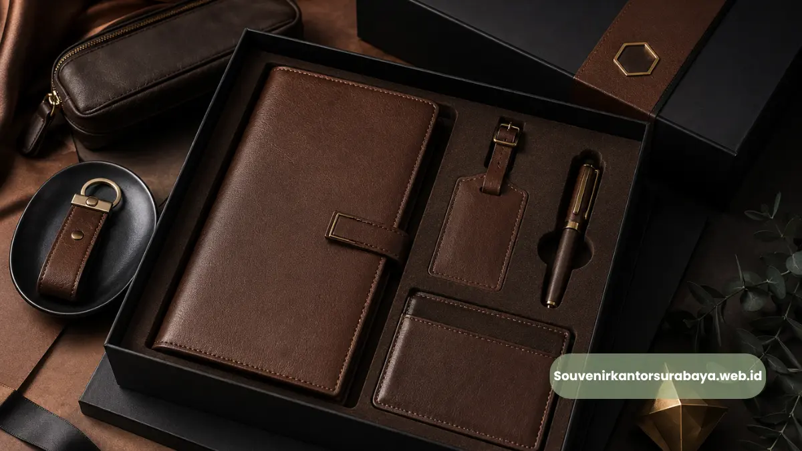

Ide souvenir kantor Surabaya elegan untuk mitra bisnis perusahaan Anda.
Ide souvenir kantor Surabaya untuk mitra bisnis sebaiknya mengutamakan produk fungsional dengan tampilan elegan, seperti alat tulis premium, gadget custom logo, atau hampers dengan kemasan eksklusif. Pemilihan yang tepat mencerminkan profesionalisme perusahaan sekaligus mempererat hubungan bisnis jangka panjang.
- Souvenir untuk mitra bisnis sebaiknya fungsional sekaligus mencerminkan citra profesional.
- Material premium seperti logam dan kulit sintetis memberikan kesan elegan.
- Custom logo pada produk memperkuat pengenalan merek di lingkungan klien.
- Kemasan turut memengaruhi kesan pertama saat souvenir diterima.
- Konsultasi jenis produk membantu menyesuaikan ide souvenir dengan profil mitra bisnis.
Ide Souvenir Kantor Apa yang Cocok untuk Klien dan Mitra Bisnis?
Ide souvenir kantor yang cocok untuk klien dan mitra bisnis meliputi alat tulis premium bermaterial logam, gadget custom logo seperti powerbank atau flashdisk, serta hampers dengan kemasan eksklusif untuk momen tertentu.
Alat Tulis Premium Bermaterial Logam
Pulpen metal stylus atau map folder kulit sintetis menjadi pilihan populer karena tampilannya yang formal dan tahan lama. Produk ini cocok digunakan langsung oleh klien dalam pertemuan bisnis, sehingga logo perusahaan terlihat secara konsisten.
Gadget Custom Logo untuk Aktivitas Harian
Powerbank slim fast charging dan flashdisk kartu kapasitas besar memberikan nilai fungsional tinggi karena digunakan dalam aktivitas kerja sehari-hari. Gadget ini memperpanjang durasi eksposur merek dibandingkan souvenir yang jarang dipakai.
Hampers dengan Kemasan Eksklusif
Untuk momen khusus seperti kunjungan klien VIP atau perayaan akhir tahun, hampers berisi kombinasi produk dengan kemasan elegan memberikan kesan mendalam dan menunjukkan perhatian khusus perusahaan terhadap relasi bisnis tersebut.

Apa Karakteristik Souvenir Kantor yang Terlihat Elegan?
Karakteristik souvenir kantor yang terlihat elegan meliputi pemilihan material berkualitas, desain minimalis, teknik cetak logo yang presisi, serta kemasan yang rapi dan profesional.
Material seperti logam, kulit sintetis, atau kayu solid umumnya memberikan kesan lebih premium dibandingkan plastik standar.
Desain yang minimalis dengan penempatan logo yang proporsional juga membuat produk terlihat lebih rapi dan tidak berlebihan. Teknik cetak seperti emboss atau laser engraving menghasilkan tampilan logo yang halus dan tahan lama dibandingkan sablon biasa pada material tertentu.
Kemasan turut berperan penting dalam kesan elegan sebuah souvenir. Kotak custom dengan warna netral, ditambah kartu ucapan singkat, dapat meningkatkan persepsi nilai produk di mata penerima meskipun harga produk itu sendiri berada di kategori menengah.
Baca Juga
Bagaimana Cara Memilih Souvenir Kantor Sesuai Profil Penerima?
Cara memilih souvenir kantor sesuai profil penerima adalah dengan mempertimbangkan posisi jabatan, frekuensi interaksi dengan perusahaan, serta jenis acara yang menjadi konteks pemberian souvenir tersebut.
Untuk klien dengan posisi manajerial atau eksekutif, produk dengan material premium seperti map folder kulit sintetis atau pulpen metal stylus lebih sesuai karena mencerminkan penghargaan terhadap posisi mereka.
Untuk mitra bisnis yang berinteraksi secara rutin, gadget fungsional seperti powerbank atau flashdisk lebih tepat karena akan sering digunakan dalam aktivitas kerja.
Konteks acara juga menentukan pilihan produk. Souvenir untuk seminar kit umumnya bersifat lebih praktis dan seragam untuk seluruh peserta, sementara souvenir untuk klien VIP dapat dipersonalisasi dengan kemasan dan produk yang lebih eksklusif.
Mengapa Custom Logo Penting dalam Souvenir Kantor untuk Mitra Bisnis?
Custom logo penting karena memperkuat identitas merek setiap kali produk digunakan oleh mitra bisnis, sekaligus menciptakan kesan profesional yang membedakan perusahaan dari kompetitor.
Logo yang dicetak dengan presisi pada produk berkualitas menunjukkan perhatian perusahaan terhadap detail, yang secara tidak langsung mencerminkan standar kerja perusahaan itu sendiri. Hal ini menjadikan souvenir custom logo bukan hanya sekadar hadiah, tetapi juga bagian dari strategi komunikasi merek jangka panjang.
Konsultasikan kebutuhan ide souvenir kantor Surabaya elegan untuk mitra bisnis perusahaan Anda bersama souvenirkantorsurabaya.web.id untuk mendapatkan rekomendasi produk yang sesuai dengan profil dan kebutuhan korporat Anda.

Hawa Nadira
Tim penulis CorporateGifts ID berfokus pada strategi souvenir kantor, merchandise korporat, dan inovasi brand untuk klien B2B.
Keahlian: Branding perusahaan, produksi souvenir, paket event, desain materi promosi.
Artikel Terkait

Souvenir Kantor Surabaya
Cari souvenir kantor Surabaya premium & custom logo untuk klien, karyawan, dan event?
Baca Selengkapnya
Souvenir Kantor Eksklusif
Souvenir kantor eksklusif Surabaya untuk klien dan mitra VIP, tampil elegan dan berkesan.
Baca SelengkapnyaCustom Logo Souvenir Kantor
Custom logo pada souvenir kantor untuk memperkuat identitas brand perusahaan Anda.
Baca Selengkapnya